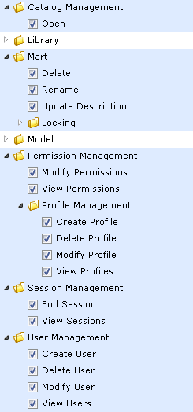
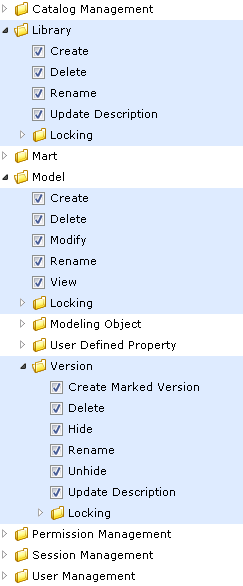
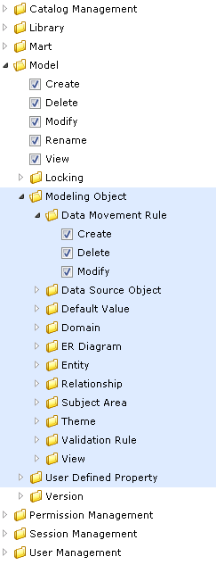

How Profiles Work
The way profiles work depends on the following factors:
- The type of user that is assigned to the profile.
- The objects that are included in the profile.
- The permissions that are assigned to the objects.
This section describes the permissions available for various types of users. The section also includes common user profiles and describes permissions for those profiles.
Type 1: Mart level
- Includes items under Catalog Management, Mart, Permission Management, Session Management, and User Management.
- Mart level permissions are granted only if a user is assigned to a profile on Mart.
- The Mart level permissions are restricted or allowed at Mart Server itself. The only exception is that Catalog Manager, Open is handled by the client.

Type 2: Catalog Object level
- Includes items under Library, Model, and Version.
- All library privileges, that is, create, delete, and modify are granted when a user is assigned to a profile on the Library or Mart.
- Catalog Object level permissions are restricted or allowed at Mart Server itself. The only exception is that Model, Modify is also verified in erwin DM as part of live semantic.

Type 3: Modeling Object level
- Includes items under Modeling Object.
- Modeling Object level permissions are used for restricting or allowing create, modify, and delete operations on modeling objects within the Catalog of type Model.
- Modeling Object level permissions are restricted or allowed from live semantic in erwin DM.

Note: To be able to add an entity to the Subject Area and ER Diagram, set the Modify permission for Entity, Subject Area, and ER Diagram for the profile.
Permissions
Permission are defined as follows:
- A profile assigned to a user on a catalog.
- A Catalog could be the Mart, a Library, or a Model.
For more information about the types of users, see the Mart Users topic.
Authorization rules for users
The authorization rules for users are explained with examples for profiles and users. This approach helps you relate to a scenario that exists in your work environment and understand the rules better.
The authorization rules are explained based on the following sample catalog structure:
Consider the following sample profiles and users:
- Sample profiles P1 and P2
- Sample Server user SU1
- Sample Active Directory (AD) user ADU1
- Sample AD groups ADG1 and ADG2
Authorization Rules for Server User
- Rule 1: P1 assigned to SU1 on Mart
- SU1 gets the following privileges:
- Type 1 privileges of P1 on Mart
- Type 2 privileges of P1 on all libraries and models
- Type 3 privileges of P1 on all models in Mart
- Rule 2: P1 and P2 assigned to SU1 on Mart
- SU1 gets the union of P1 and P2 privileges on the entire Mart. Type 1, 2, and 3 privileges are considered. Union here means that if a privilege is restricted in P1 but allowed in P2, it is allowed for SU1.
- In this case, multiple profile rule does not apply, as the union of privileges is used.
- Rule 3: P1 assigned to SU1 on Library1
- SU1 gets the privileges assigned for P1 on the entire Library1.
- Type 1 privileges are not considered.
- Rule 4: P1 assigned to SU1 on Model1
- SU1 gets the privileges assigned for P1 on Model1.
- Type 1 privileges and some Type 2 (Library) are not considered.
- Rule 5: P1 assigned to SU1 on Mart and P2 assigned to SU1 on Library1
- SU1 gets the privileges of P1 on Mart and Library2, but not on Library1.
- SU1 gets the privileges of P2 on Library1.
- Rule 6: P1 assigned to SU1 on Mart and P2 assigned to SU1 on Model1
- SU1 gets the privileges of P1 on Mart, Library1, Model2, and the entire Library2, but not on Model1.
- SU1 gets the privileges of P2 on Model1.
Authorization Rules for Windows User
- Rule 7:
- If a Windows user is added as a Mart user, the rules of a Server User apply to the Windows user.
Authorization Rules for Group user
- Rule 8: P1 assigned to ADG1 on Mart, ADU1 is part of ADG1, and ADU1 not added as user on Mart
- ADU1 gets the privileges of P1 on Mart.
- Rule 9: P1 assigned to ADG1 on Mart, P2 assigned to ADG1 on Library1, ADU1 is part of ADG1, and ADU1 is not added as user on Mart
- ADU1 gets the privileges of P1 on Mart and Library2, but not on Library1.
- ADU1 gets the privileges of P2 on Library1.
- Rule 10: P1 assigned to ADG1 on Mart, P2 assigned to ADG2 on Mart, ADU1 is part of ADG1 as well as ADG2, and ADU1 is not added as user on Mart
- ADU1 gets the union of P1 and P2 privileges on Mart.
- Rule 11: P1 assigned to ADG1 on Mart, P2 assigned to ADG2 on Library1, ADU1 is part of ADG1 as well as ADG2, and ADU1 is not added as user on Mart
- ADU1 gets the privileges of P1 on Mart and Library2.
- ADU1 gets the union of P1 and P2 privileges on Library1.
- Rule 12: P1 assigned to ADG1 on Mart, ADU1 is part of ADG1, and ADU1 is also added as user on Mart
- Since ADU1 is also added as a user on Mart, the user is not considered a part of any group. The rules are same as that of a Windows user.
- Rule 13: P1 assigned to ADG1 on Mart, P2 assigned to ADG2 on Mart, ADU1 is part of ADG1 only, ADG1 is subgroup of ADG2, and ADU1 is not added as user on Mart
- ADU1 gets the privileges of P1 on Mart. This is because ADG1 is explicitly added on Mart and ADU1 is only part of ADG1.
- Rule 14: P1 assigned to ADG1 on Mart, P2 assigned to ADG2 on Mart, ADU1 is part of ADG1 as well as ADG2, ADG1 is subgroup of ADG2, and ADU1 is not added as user on Mart
- ADU1 gets the union of P1 and P2 privileges on Mart.
 Back to Top
Back to Top